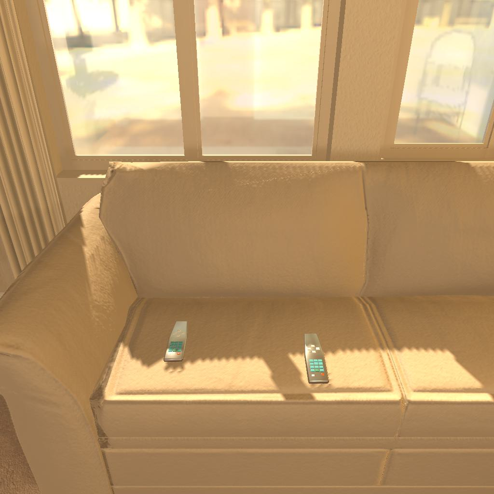

---------------------------------------------------------task: 7---------------------------------------------------------
--------------------------------------------------------------------------------------------------------------------------------------------------------------------
--------------------------------------------------------------------------------------------------------------------------------------------------------------------
Step:--------------------------------------------------------------------------2-------------------------------------------------------------------------------
----------------------------------------
VLM Prompt:
Image1:
Image2:
Image3:
**Instruction**
1. Analyze the provided images to identify all visible household objects and compare the difference between images (e.h. whether the object is opened or not and taken on hand or not), focusing on those relevant to the task description "put a creditcard in coffeetable."
2. Use the analysis of images and the task hint "The agent must find an object of the desired type, pick it up, find the correct location to place it, and put it down there." to answer the question: what is the most reasonable action in the choices for the task description "put a creditcard in coffeetable"?
3. Decide and write the answer using the template: The answer is: (i): , where i is the real number. If there is no desired object in images, search every place based on **Initial Observation** to find the object. And if no one is exactly correct, choose a similar answer.
**Initial Observation**
You are in the middle of a room. Looking quickly around you, you can see armchair (1-2), dresser (1), garbagecan (1), cabinet (1-4), drawer (1-4), coffeetable (1), sidetable (1), sofa (1)
**Answer Choices**
(1): go to armchair 1
(2): go to armchair 2
(3): go to dresser 1
(4): go to garbagecan 1
(5): go to cabinet 1
(6): go to drawer 2
(7): go to cabinet 2
(8): go to drawer 3
(9): go to cabinet 3
(10): go to drawer 4
(11): go to cabinet 4
(12): go to sidetable 1
(13): go to sofa 1
(14): open drawer 1
(15): close drawer 1
(16): examine drawer 1
**Answer**
Let's think step by step by following the instructions.
----------------------------------------
----------------------------------------
Original Response:
Image Analysis:
- Image1 shows a sofa with two remote controls on it, but no credit card is visible.
- Image2 displays a coffee table with a box and a remote control on it. There is no credit card visible on the coffee table.
- Image3 depicts a corner of a room with a golden statue and some scattered objects on the floor, including a credit card near the statue's base.
Task Hint Analysis:
The task requires finding a credit card and placing it on the coffee table.
Initial Observation Analysis:
Based on the initial observation, we should search for the credit card in places where it could be kept or dropped, such as dressers, cabinets, drawers, side tables, and sofas.
Action Decision:
Since the credit card is visible in Image3 near the golden statue, which could be a decorative object on a side table or cabinet, the most reasonable action would be to pick up the credit card from there. However, the action choices given do not include "pick up credit card." The closest action that would allow us to get the credit card is to go to the location where it is visible.
The answer is: (12): go to sidetable 1.
----------------------------------------
----------------------------------------
>>> Refine Original VLM Response and Get Pure Action: go to sidetable 1
----------------------------------------
-----------------------------------------------------------------
Running time: 11.85987901687622 seconds
Total Money: 2.9531300000000007
-----------------------------------------------------------------
-----------------------------------------------------------------
Text Observation:You arrive at loc 13. On the sidetable 1, you see a creditcard 2.
-----------------------------------------------------------------
UNSUCCEED